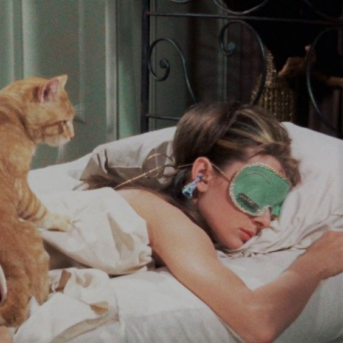

Drita e parë
Ora e brendshme merr sinjalin e ditës nga drita natyrale; kështu nis numërimi mbrapsht për gjumin.
ZAKONET DHE PUSHIMI
Si ndikojnë ritmi ditor dhe zgjedhjet e thjeshta në cilësinë e natës.
Punoi:Rejana Ibrahimi
Mirë se vini në këtë prezantim mbi gjumin dhe rutinën. Shpesh mendojmë se gjumi nis në momentin kur fikim dritën, por në fakt ritmi i pushimit ndërtohet gjatë gjithë ditës.
PERSPEKTIVA E DITËS
Zakonet nga mëngjesi deri në perëndim përgatisin trupin dhe mendjen për pushimin e natës.
Ora e brendshme merr sinjalin e ditës nga drita natyrale; kështu nis numërimi mbrapsht për gjumin.
Lëvizja fizike e moderuar gjatë ditës krijon presion natyral për gjumë dhe lehtëson rënien në shtrat.
Zbutja e dritave dhe shmangia e stimulimit në perëndim ndihmojnë prodhimin natyral të melatoninës.

Në këtë slajd theksojmë se pərgatitja për gjumë fillon që me zgjimin. Tre shtyllat: drita e hershme, lëvizja trupore dhe zbutja e orëve të pasdites.
RITMI CIRKADIAN
Ora biologjike është e parashikueshme: kur flemë dhe zgjohemi në orare të përafërta, trupi e di kur të rrisë energjinë dhe të çlirojë hormonet e qetësimit.
Ora e zgjimit nis ciklin cirkadian. Zgjimi në të njëjtën orë ndihmon trupin të vendosë vetë një orar të qëndrueshëm për përgjumjen.
Ndryshimet e mëdha mes ditëve tē javës dhe fundjavës krijojnë lodhje të ngjashme me ndryshimin e zonave kohore; trupi lodhet duke u përshtatur vazhdimisht.
HAPAT E MËNGJESIT
Dritë natyrale, lëvizje e lehtë dhe hapësira pa nxitim.
Hap grilat ose dil në ballkon për 10 minuta menjёherё pas zgjimit.
Hidratimi dhe njё shtendosje e shkurtër zgjojnё metabolizmin dhe muskujt.
Lëre telefonin mënjanë gjatë 20 minutave të para për të shmangur stresin e menjëhershëm.
Mëngjesi nuk ka nevojë për sforcime të vështira. Drita, uji dhe mungesa e nxitimit i japin trurit sinjalin se dita ka nisur me qetësi.
ZINXHIRI SHKAK-PASOJË
Mes orës 08:00 dhe 18:00, zakonet ndikojnë te gjumi.
Drita natyrale jashtë ose pranë dritares sinkronizon orën dhe vigjilencën.
Ecja dhe aktiviteti fizik harxhojnë energji dhe thellojnë pushimin.
Darkat e lehta dhe shmangia e kafeinës pas mesditës mbrojnë tretjen natën.
Pauzat e shkurtra parandalojnë mbingarkesën mendore në mbrëmje.
Ekuilibri i ditës shmang lodhjen artificiale dhe ankthin para rënies në shtrat.
SEKUENCË PRAKTIKE
Ule ritmin gradualisht për 30 deri në 60 minuta.
Shëno dy detyra për nesër; fik kompjuterin.
Zëvendëso dritën e ftohtë të telefonit me dritë të ngrohtë e të zbutur.
Ajros dhomën; përgatit veshjen e nesërme për të larguar mendimet.
Lexo disa faqe ose dëgjo muzikë të qetë para se të shtrihesh.
Rituali i mbrëmjes është si ulja e një avioni: kërkon pistë dhe kohë. Katër hapa të thjeshtë e kalojnë trurin nga modaliteti i punës te ai i pushimit.
MJEDISI I GJUMIT
Një dhomë e qetë krijon lidhje psikologjike; trupi reagon me relaksim sapo hyn.
Perdet e trasha ose maska e syve ndalojnë dritat urbane dhe nxisin melatoninën.
Një dhomë pak më e freskët (rreth 18–20°C) lehtëson uljen e temperaturës trupore.
Shmang punën apo ngrënien në shtrat; lidhe atë vetëm me pushimin.
Dhoma e gjumit është një strehë pushimi. Errësira, freskia dhe ruajtja e shtratit vetëm për gjumë e heqin konfuzionin mendor në orët e vona.
RIKTHIMI PA STRES
Udhëtimet, ngarkesa dhe ngjarjet e papritura mund ta prishin ritmin; rikthehu pa perfeksionizëm dhe pa faj.
Rikthe orarin e zgjimit në mëngjes, pavarësisht sa vonë ke fjetur një natë më parë.
Mos i ndrysho të gjitha zakonet njëherësh; fik telefonin pak më herët.
Një natë më e dobët nuk prish rrugëtimin; rëndësi ka qëndrueshmëria afatgjatë.
Prishja e rutinës ndodh te të gjithë. Çelësi është të mos përpiqemi të rregullojmë gjithçka brenda 24 orëve, por të rimarrim kontrollin përmes orës së zgjimit.
PËRFUNDIMI DHE VEPRIMI
Zgjidh 1 ose 2 ndryshime të vogla dhe provoji për 7 ditë me radhë; vëzhgo energjinë.
✓ Kontrolli i mëngjesit: Dritë natyrale brenda 30 minutave të para.
✓ Kontrolli i mbrëmjes: Zbut ndriçimin 45 minuta para se të shtrihesh.
✓ Eksperimenti 7-ditor: I njëjti orar zgjimi për një javë rresht.